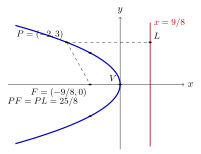
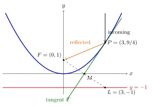
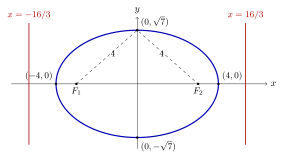
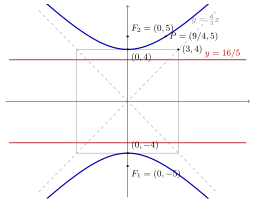
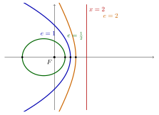
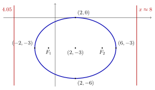
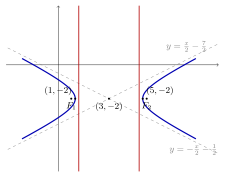
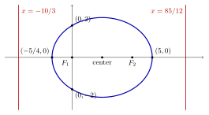
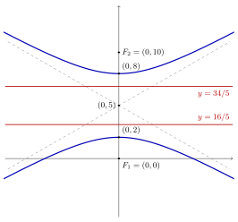
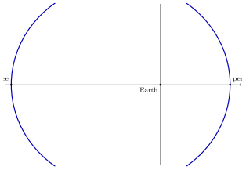

12.4 Conic Sections¶
Guiding question
Slice a double cone with a plane that misses its vertex and you get a circle, an ellipse, a parabola or a hyperbola. The Greeks studied these curves in that way, as “conic sections”. We define them by distances instead, because distances lead straight to equations. A parabola is the set of points equally far from a point and a line; an ellipse is the set of points whose distances from two points add up to a constant; a hyperbola is the set of points whose distances from two points differ by a constant. One idea ties the three together: the distance from a point to a fixed point is a constant multiple \(e\) of its distance to a fixed line, and the number \(e\) alone decides which conic we get. This section finds the equation of each conic from its definition (every step reversible), proves the asymptotes of the hyperbola and the reflection property of the parabola, proves the eccentricity theorem, moves conics around by completing the square, and writes all of them as one polar equation with a focus at the pole (Section 12.2). The polar form is the one used for orbits, and the area formula of Section 12.3 gives the area of an orbit. Squaring an equation can add or lose points; Appendix K handles that once and for all.
By the end of this section you should be able to:
-
state the focus–directrix definition of the parabola and the distance definitions of the ellipse and the hyperbola, and derive their equations;
-
find the vertices, foci, directrices, axes, asymptotes and eccentricity of a conic from its equation, and write the equation from such data;
-
identify and sketch a conic given by \(Ax^2+Cy^2+Dx+Ey+F=0\) by completing the square, including the degenerate cases;
-
use the eccentricity to decide the type of a conic and to write it in polar coordinates with a focus at the pole, and convert between polar and Cartesian forms;
-
use the reflection property of the parabola;
-
prove each of these statements.
The parabola¶
Definition 12.4.1: Parabola
Let \(F\) be a point and \(\ell\) a line not through \(F\). The parabola with focus \(F\) and directrix \(\ell\) is the set of points \(P\) with \(\lvert PF\rvert=\operatorname{dist}(P,\ell)\), where \(\operatorname{dist}(P,\ell)\) is the perpendicular distance from \(P\) to \(\ell\). The line through \(F\) perpendicular to \(\ell\) is the axis, and the point where the parabola crosses its axis is the vertex.
To find an equation we place the focus on a coordinate axis, so that the directrix is perpendicular to it. Appendix K (Theorem K.4) shows that no generality is lost: moving the plane by a rotation and a translation does not change distances.
Theorem 12.4.2: Equation of a parabola
Let \(p\ne0\). The parabola with focus \(F=(0,p)\) and directrix \(y=-p\) is the set of points with
Its vertex is \((0,0)\) and its axis is the \(y\)-axis; it opens upward if \(p>0\) and downward if \(p<0\). The parabola with focus \((p,0)\) and directrix \(x=-p\) is \(y^2=4px\): its axis is the \(x\)-axis, and it opens to the right if \(p>0\) and to the left if \(p<0\).
Proof. Let \(P=(x,y)\). Then \(\lvert PF\rvert=\sqrt{x^2+(y-p)^2}\ge0\) and \(\operatorname{dist}(P,\ell)=\lvert y+p\rvert\ge0\). Both sides are nonnegative, so by Theorem K.1 the equation \(\lvert PF\rvert=\operatorname{dist}(P,\ell)\) is equivalent to the equation of the squares, and no point is gained or lost:
On the axis \(x=0\) we get \(4py=0\), so \(y=0\) (since \(p\ne0\)): the vertex is \((0,0)\). If \(p>0\) then \(y=\frac{x^2}{4p}\ge0\) and the curve lies above the vertex; if \(p<0\) it lies below. The second statement is the first with \(x\) and \(y\) exchanged (a reflection in the line \(y=x\), which preserves distances). ◻ ∎
The number \(\lvert p\rvert\) is the distance from the vertex to the focus (and to the directrix). The chord through the focus perpendicular to the axis, the latus rectum, has length \(4\lvert p\rvert\): for \(x^2=4py\), \(y=p\) gives \(x^2=4p^2\), so \(x=\pm2p\).
Example 12.4.3: Focus, directrix and a check for \(2y^2=-9x\)
Find the vertex, axis, focus and directrix of \(2y^2=-9x\), the length of its latus rectum, and sketch it.
Solution. Divide by \(2\): \(y^2=-\frac92x\). Compare with \(y^2=4px\) (Theorem 12.4.2): \(4p=-\frac92\), so \(p=-\frac98<0\) and the parabola opens to the left. The vertex is \((0,0)\) and the axis is the \(x\)-axis. The focus is \((p,0)=\left(-\frac98,0\right)\) and the directrix is \(x=-p=\frac98\). The latus rectum is the chord \(x=-\frac98\): then \(y^2=-\frac92\left(-\frac98\right)=\frac{81}{16}\), so \(y=\pm\frac94\), and its length is \(2\cdot\frac94=\frac92=4\lvert p\rvert\). Check with the definition. Take \(y=3\): then \(x=-\frac{2y^2}9=-2\), so \(P=(-2,3)\) is on the parabola. \(\lvert PF\rvert=\sqrt{\left(-2+\frac98\right)^2+3^2}=\sqrt{\frac{49}{64}+\frac{576}{64}}=\sqrt{\frac{625}{64}}=\frac{25}8\), and the distance from \(P\) to the line \(x=\frac98\) is \(\frac98-(-2)=\frac{25}8\). They agree.

The two points on the line \(x=-\frac98\) mark the latus rectum.
Knowledge Check 12.4.1: Reading a parabola
Find the focus and the directrix of \(x^2=-24y\), and say in which direction it opens.
Pause and think 12.4.1: Why must \(F\) be off the line?
Definition 12.4.1 requires that \(F\) is not on \(\ell\). What set of points satisfies \(\lvert PF\rvert=\operatorname{dist}(P,\ell)\) if \(F\) is on \(\ell\)?
Answer and discussion
If \(F\) is on \(\ell\), then for every \(P\) we have \(\lvert PF\rvert\ge\operatorname{dist}(P,\ell)\), because the perpendicular distance is the shortest distance from \(P\) to any point of \(\ell\), and \(F\) is a point of \(\ell\). Equality holds exactly when \(PF\) is perpendicular to \(\ell\), that is, when \(P\) lies on the line through \(F\) perpendicular to \(\ell\). So the set is a line, not a parabola. This is the degenerate case \(d=0\) of Theorem 12.4.17.
The reflection property of the parabola¶
A mirror is a curve; a ray of light that strikes it is turned by the law of reflection: the angle of incidence equals the angle of reflection. In terms of the tangent line \(T\) at the point \(P\) where the ray strikes, the law says that the reflected ray is the mirror image, in \(T\), of the continuation of the incoming ray beyond \(P\) (the mirror image of a point \(Q\) in \(T\) is the point \(Q'\) such that \(T\) is the perpendicular bisector of \(QQ'\)).
Theorem 12.4.4: Reflection property of the parabola
Let \(x^2=4py\) with \(p>0\), with focus \(F=(0,p)\) and directrix \(y=-p\). Let \(P=(x_0,y_0)\) be a point of the parabola and \(L=(x_0,-p)\) the point of the directrix directly below it. Then the tangent line \(T\) at \(P\) is the perpendicular bisector of the segment \(FL\). Consequently:
(a) a ray traveling parallel to the axis, toward the vertex, hits the parabola at \(P\) and is reflected along the ray from \(P\) through the focus \(F\);
(b) a ray from the focus hits the parabola at \(P\) and is reflected parallel to the axis, away from the vertex.
Proof. \(T\) is the perpendicular bisector of \(FL\). By the definition of the parabola, \(\lvert PF\rvert=\lvert PL\rvert\), because \(L\) is the foot of the perpendicular from \(P\) to the directrix. A point equally far from the two ends of a segment lies on its perpendicular bisector \(m\), so \(P\) lies on \(m\). If \(x_0\ne0\), the segment \(FL\) from \((0,p)\) to \((x_0,-p)\) has slope \(\frac{-p-p}{x_0-0}=-\frac{2p}{x_0}\), so \(m\) has the negative reciprocal slope \(\frac{x_0}{2p}\). The tangent line at \(P\) has slope \(\frac d{dx}\frac{x^2}{4p}\Big|_{x=x_0}=\frac{x_0}{2p}\). Two lines through \(P\) with the same slope coincide, so \(T=m\). If \(x_0=0\), then \(P\) is the vertex, \(FL\) is the vertical segment from \((0,p)\) to \((0,-p)\), whose perpendicular bisector is the \(x\)-axis, and the tangent line at the vertex is also the \(x\)-axis (\(\frac{d}{dx}\frac{x^2}{4p}=0\) at \(0\)).
(a) A ray traveling parallel to the axis toward the vertex travels downward along a vertical line \(x=x_0\) and hits the parabola at \(P\) from the inside (the side of the focus). Its continuation beyond \(P\) is the ray from \(P\) through \(L\). The mirror image in \(T\) of \(L\) is \(F\), because \(T\) is the perpendicular bisector of \(FL\); the mirror image of \(P\), which is on \(T\), is \(P\). So the mirror image of the ray \(PL\) is the ray \(PF\), and that is the reflected ray.
(b) A ray from \(F\) arrives at \(P\) along the ray \(FP\); its continuation beyond \(P\) is the ray from \(P\) pointing away from \(F\), which is the opposite of the ray \(PF\). The mirror image in \(T\) of the ray \(PF\) is the ray \(PL\), so the mirror image of its opposite is the opposite of the ray \(PL\): the ray from \(P\) pointing straight up. ◻ ∎

The picture shows \(p=1\) and \(P=\left(3,\frac94\right)\): the tangent line \(y=\frac32x-\frac94\) passes through the midpoint \(M=\left(\frac32,0\right)\) of \(FL\) and is perpendicular to it (slopes \(\frac32\) and \(-\frac23\)).
Example 12.4.5: Where to put the receiver of a dish
A satellite dish is made by turning a parabola about its axis. A cross-section through the axis is the parabola \(y=\frac{x^2}{4p}\) (vertex at the origin, axis the \(y\)-axis), and the dish is \(2.4\) m wide and \(0.45\) m deep. How far above the vertex should the receiver be, and why?
Solution. The rim is the point \((1.2,0.45)\). It lies on \(x^2=4py\), so \(1.44=4p\cdot0.45=1.8p\), giving \(p=\frac{1.44}{1.8}=0.8\). The focus is \(F=(0,0.8)\): the receiver should be \(0.8\) m above the vertex, which is \(0.8-0.45=0.35\) m above the plane of the rim. Why: signals from a distant satellite arrive almost parallel to the axis, and by Theorem 12.4.4(a) every such ray, wherever it hits the dish, is reflected through \(F\). Check at the rim. For \(P=(1.2,0.45)\) the point \(L=(1.2,-0.8)\), and \(\lvert PF\rvert=\sqrt{1.2^2+0.35^2}=\sqrt{1.5625}=1.25\) and \(\lvert PL\rvert=0.45+0.8=1.25\), equal as the definition requires.
The ellipse¶
Definition 12.4.6: Ellipse
Let \(F_1\) and \(F_2\) be two points at distance \(2c>0\) from each other, and let \(a>c\). The ellipse with foci \(F_1,F_2\) and major axis of length \(2a\) is the set of points \(P\) with \(\lvert PF_1\rvert+\lvert PF_2\rvert=2a\). Its center is the midpoint of \(F_1F_2\). (With \(c=0\) the two foci coincide and the set is a circle of radius \(a\). If \(2a=2c\) the set is the segment \(F_1F_2\), and if \(2a<2c\) it is empty, which is why \(a>c\) is assumed.)
Theorem 12.4.7: Equation of an ellipse
Let \(a>c>0\) and \(b=\sqrt{a^2-c^2}\), so \(a^2=b^2+c^2\). The ellipse with foci \(F_1=(-c,0)\) and \(F_2=(c,0)\) and major axis \(2a\) is the set of points with
For every point \(P=(x,y)\) of the ellipse, \(\lvert PF_1\rvert=a+\frac ca\,x\) and \(\lvert PF_2\rvert=a-\frac ca\,x\). The ellipse crosses the \(x\)-axis at the vertices \((\pm a,0)\) and the \(y\)-axis at the minor-axis vertices \((0,\pm b)\); the major axis has length \(2a\) and the minor axis has length \(2b\). If the foci are \((0,\pm c)\), the equation is \(\frac{y^2}{a^2}+\frac{x^2}{b^2}=1\).
Proof. Let \(u=\lvert PF_1\rvert\) and \(v=\lvert PF_2\rvert\).
Distances \(\Rightarrow\) equation. Suppose \(u+v=2a\). By Theorem K.3(i), \(u=a+\frac ca x\) and \(v=a-\frac ca x\). Squaring \(u=a+\frac cax\) (a true equation stays true when squared): \((x+c)^2+y^2=a^2+2cx+\frac{c^2}{a^2}x^2\), that is \(x^2+2cx+c^2+y^2=a^2+2cx+\frac{c^2}{a^2}x^2\). Cancel \(2cx\) and collect: \(x^2\left(1-\frac{c^2}{a^2}\right)+y^2=a^2-c^2\), that is \(\frac{b^2}{a^2}x^2+y^2=b^2\). Divide by \(b^2>0\): \(\frac{x^2}{a^2}+\frac{y^2}{b^2}=1\).
Equation \(\Rightarrow\) distances. Suppose \(\frac{x^2}{a^2}+\frac{y^2}{b^2}=1\). Then \(x^2\le a^2\), so \(\left\lvert\frac cax\right\rvert\le c<a\), and therefore \(a+\frac cax>0\) and \(a-\frac cax>0\). Also \(y^2=b^2-\frac{b^2}{a^2}x^2=a^2-c^2-\left(1-\frac{c^2}{a^2}\right)x^2\). Then
Since \(u\ge0\) and \(a+\frac cax>0\), \(u=a+\frac cax\). In the same way \(v^2=\left(a-\frac cax\right)^2\) and \(v=a-\frac cax\). Adding, \(u+v=2a\).
The vertices and minor-axis vertices are the intercepts (\(y=0\) gives \(x=\pm a\); \(x=0\) gives \(y=\pm b\)). The last statement is the first with \(x\) and \(y\) exchanged. ◻ ∎
Example 12.4.8: An ellipse: everything from the equation
Find the vertices, minor-axis vertices, foci, axes, eccentricity and directrices of \(7x^2+16y^2=112\), and sketch it.
Solution. Divide by \(112\): \(\frac{x^2}{16}+\frac{y^2}7=1\). The larger denominator is under \(x^2\), so the foci are on the \(x\)-axis and (Theorem 12.4.7) \(a^2=16\), \(b^2=7\): \(a=4\), \(b=\sqrt7\approx2.65\). Then \(c^2=a^2-b^2=9\), \(c=3\). The vertices are \((\pm4,0)\), the minor-axis vertices \((0,\pm\sqrt7)\) and the foci \((\pm3,0)\). The major axis has length \(2a=8\) and the minor axis \(2b=2\sqrt7\). The eccentricity (Definition 12.4.15 below) is \(e=\frac ca=\frac34\) and the directrices are \(x=\pm\frac ae=\pm\frac{16}3\). Check. The minor-axis vertex \(\left(0,\sqrt7\right)\) is at distance \(\sqrt{3^2+7}=4\) from each focus, and \(4+4=8=2a\), as the definition requires.

The dashed segments join the minor-axis vertex to the foci. Each has length \(a=4\).
Knowledge Check 12.4.2: Parameters of an ellipse
An ellipse centered at the origin with foci on the \(x\)-axis has \(a=10\) and eccentricity \(e=\frac35\). Find \(b\), \(c\) and the directrices.
Pause and think 12.4.2: Squeezing an ellipse
Keep \(a\) fixed in \(\frac{x^2}{a^2}+\frac{y^2}{b^2}=1\) and let the foci \((\pm c,0)\) move: first \(c\to0\), then \(c\to a\). What does the ellipse look like in each limit, and what happens to \(b\)?
Answer and discussion
Since \(b^2=a^2-c^2\): as \(c\to0\) the foci merge at the center, \(b\to a\) and the ellipse becomes a circle of radius \(a\) (\(e\to0\)). As \(c\to a\) the foci approach the vertices \((\pm a,0)\), \(b\to0\), and the ellipse flattens to the segment from \((-a,0)\) to \((a,0)\) (\(e\to1\)): then \(\lvert PF_1\rvert+\lvert PF_2\rvert=2a\) is the distance \(\lvert F_1F_2\rvert\), which happens only for \(P\) on the segment between the foci.
The hyperbola¶
Definition 12.4.9: Hyperbola
Let \(F_1\) and \(F_2\) be points at distance \(2c>0\) and let \(0<a<c\). The hyperbola with foci \(F_1,F_2\) is the set of points \(P\) with \(\bigl\lvert\lvert PF_1\rvert-\lvert PF_2\rvert\bigr\rvert=2a\). Its center is the midpoint of \(F_1F_2\) and its vertices are the two points of the hyperbola on the line \(F_1F_2\).
Theorem 12.4.10: Equation of a hyperbola
Let \(c>a>0\) and \(b=\sqrt{c^2-a^2}\), so \(b^2=c^2-a^2\). The hyperbola with foci \((\pm c,0)\) and \(\bigl\lvert\lvert PF_1\rvert-\lvert PF_2\rvert\bigr\rvert=2a\) is the set of points with
It has two branches (\(x\ge a\) and \(x\le-a\)), vertices \((\pm a,0)\) and no \(y\)-intercept. For every point, \(\lvert PF_1\rvert=\left\lvert a+\frac cax\right\rvert\) and \(\lvert PF_2\rvert=\left\lvert a-\frac cax\right\rvert\). If the foci are \((0,\pm c)\), the equation is \(\frac{y^2}{a^2}-\frac{x^2}{b^2}=1\).
Proof. Let \(u=\lvert PF_1\rvert\) and \(v=\lvert PF_2\rvert\).
Distances \(\Rightarrow\) equation. If \(\lvert u-v\rvert=2a\), then \(u-v=2a\) or \(v-u=2a\). By Theorem K.3(ii) and (iii), in both cases \(u=\pm\left(a+\frac cax\right)\), so \(u^2=\left(a+\frac cax\right)^2\): \(x^2+2cx+c^2+y^2=a^2+2cx+\frac{c^2}{a^2}x^2\). Cancel \(2cx\) and collect: \(x^2\left(1-\frac{c^2}{a^2}\right)+y^2=a^2-c^2\). Now \(1-\frac{c^2}{a^2}=-\frac{b^2}{a^2}\) and \(a^2-c^2=-b^2\), so \(-\frac{b^2}{a^2}x^2+y^2=-b^2\); divide by \(-b^2<0\): \(\frac{x^2}{a^2}-\frac{y^2}{b^2}=1\).
Equation \(\Rightarrow\) distances. Suppose \(\frac{x^2}{a^2}-\frac{y^2}{b^2}=1\). Then \(x^2\ge a^2\) and \(y^2=b^2\left(\frac{x^2}{a^2}-1\right)=(c^2-a^2)\frac{x^2}{a^2}-(c^2-a^2)\). Then
and in the same way \(v^2=\left(a-\frac cax\right)^2\). So \(u=\left\lvert a+\frac cax\right\rvert\) and \(v=\left\lvert a-\frac cax\right\rvert\). If \(x\ge a\), then \(\frac cax\ge c>a\), so \(a+\frac cax>0\) and \(a-\frac cax<0\), whence \(u=a+\frac cax\), \(v=\frac cax-a\) and \(u-v=2a\). If \(x\le-a\), then \(\frac cax\le-c<-a\), so \(a+\frac cax<0\) and \(a-\frac cax>0\), whence \(u=-a-\frac cax\), \(v=a-\frac cax\) and \(v-u=2a\). In both cases \(\lvert u-v\rvert=2a\).
Setting \(y=0\) gives \(x=\pm a\); setting \(x=0\) gives \(y^2=-b^2<0\), impossible. The last statement is the first with \(x\) and \(y\) exchanged. ◻ ∎
Definition 12.4.11: Asymptote
A line \(y=mx+k\) is an asymptote of a curve as \(x\to\infty\) if the curve contains points \((x,y(x))\) for all large \(x\) and \(y(x)-(mx+k)\to0\) as \(x\to\infty\); the definition as \(x\to-\infty\) is the same.
Theorem 12.4.12: Asymptotes of a hyperbola
The hyperbola \(\frac{x^2}{a^2}-\frac{y^2}{b^2}=1\) has the two asymptotes \(y=\frac bax\) and \(y=-\frac bax\), and no others (and the same two lines are asymptotes in both directions, \(x\to\infty\) and \(x\to-\infty\)). The hyperbola \(\frac{y^2}{a^2}-\frac{x^2}{b^2}=1\) has the asymptotes \(y=\pm\frac abx\).
Proof. On the upper half of the right branch, \(y=\frac ba\sqrt{x^2-a^2}\) for \(x\ge a\). Then
(multiplying and dividing by \(x+\sqrt{x^2-a^2}\)), which is positive and tends to \(0\) as \(x\to\infty\), because the denominator exceeds \(x\). So \(y=\frac bax\) is an asymptote. The hyperbola is symmetric about both axes, which gives \(y=-\frac bax\) for the lower half of the right branch, and the left branch as \(x\to-\infty\).
No other line. Suppose \(y-(mx+k)\to0\) along the upper half of the right branch as \(x\to\infty\). Dividing by \(x\), \(\frac yx-m-\frac kx\to0\), so \(m=\lim\frac yx=\lim\frac ba\sqrt{1-\frac{a^2}{x^2}}=\frac ba\). Then \(k=\lim\left(y-\frac bax\right)=0\) by the computation above. The same argument handles the other three pieces, giving \(-\frac ba\) and \(0\). A vertical line cannot be an asymptote of the form \(y=mx+k\) and on the hyperbola \(\lvert y\rvert=\frac ba\sqrt{x^2-a^2}\) stays bounded when \(x\) stays bounded, so \(y\) cannot tend to infinity near a vertical line. The last statement is the first with \(x\) and \(y\) exchanged: \(x=\frac ba y\) means \(y=\frac abx\). ◻ ∎
The rectangle with corners \((\pm a,\pm b)\) is the central rectangle: its diagonals lie on the asymptotes, and its diagonal has length \(2\sqrt{a^2+b^2}=2c\), so the foci lie on the circle through its corners.
Example 12.4.13: A hyperbola with its asymptotes
Find the vertices, foci, asymptotes, eccentricity and directrices of \(9y^2-16x^2=144\) and sketch it. Check a point.
Solution. Divide by \(144\): \(\frac{y^2}{16}-\frac{x^2}9=1\). The \(y^2\)-term is positive, so the vertices are on the \(y\)-axis (Theorem 12.4.10) and \(a^2=16\), \(b^2=9\): \(a=4\), \(b=3\), \(c^2=a^2+b^2=25\), \(c=5\). Vertices \((0,\pm4)\), foci \((0,\pm5)\), asymptotes \(y=\pm\frac abx=\pm\frac43x\) (they pass through the corners \((\pm3,\pm4)\) of the central rectangle), eccentricity \(e=\frac ca=\frac54\) and directrices \(y=\pm\frac ae=\pm\frac{16}5\). Check. The point \(\left(\frac94,5\right)\) satisfies \(\frac{25}{16}-\frac{81/16}9=\frac{25}{16}-\frac9{16}=1\). Its distances to the foci \((0,\pm5)\) are \(\frac94\) and \(\sqrt{\frac{81}{16}+100}=\frac{41}4\), and their difference is \(\frac{41}4-\frac94=8=2a\).

Example 12.4.14: Equations from data: ellipse, hyperbola and a focus–directrix condition
(a) Find the ellipse centered at the origin with foci \((0,\pm3)\) and directrices \(y=\pm\frac{25}3\). (b) Find the hyperbola centered at the origin with vertices \((0,\pm6)\) and eccentricity \(e=\frac53\), and its directrices and asymptotes. (c) Find the set of points \(P=(x,y)\) with \(\lvert PF\rvert=2\operatorname{dist}(P,\ell)\) for \(F=(4,0)\) and \(\ell:\ x=1\).
Solution. (a) The foci are on the \(y\)-axis, so the ellipse is \(\frac{y^2}{a^2}+\frac{x^2}{b^2}=1\) with \(c=3\). The directrices are \(y=\pm\frac ae\) (Theorem 12.4.16 below) and \(e=\frac ca\), so \(\frac ae=\frac{a^2}c=\frac{25}3\), giving \(a^2=c\cdot\frac{25}3=25\) and \(a=5\). Then \(b^2=a^2-c^2=25-9=16\). The ellipse is \(\frac{y^2}{25}+\frac{x^2}{16}=1\), with \(e=\frac35\). Check. The vertex \((0,5)\) is at distance \(5-3=2\) from the focus \((0,3)\) and \(\frac{25}3-5=\frac{10}3\) from the directrix, and \(\frac35\cdot\frac{10}3=2\).
(b) The foci are on the \(y\)-axis (the vertices are), so the hyperbola is \(\frac{y^2}{a^2}-\frac{x^2}{b^2}=1\) with \(a=6\). From \(e=\frac ca\), \(c=ae=6\cdot\frac53=10\), so \(b^2=c^2-a^2=100-36=64\). The hyperbola is \(\frac{y^2}{36}-\frac{x^2}{64}=1\). The directrices are \(y=\pm\frac ae=\pm\frac{18}5\) and the asymptotes are \(y=\pm\frac abx=\pm\frac34x\) (Theorem 12.4.12). Check. The vertex \((0,6)\) is at distance \(10-6=4\) from the focus \((0,10)\) and \(6-\frac{18}5=\frac{12}5\) from the directrix, and \(\frac53\cdot\frac{12}5=4\).
(c) The condition is \(\sqrt{(x-4)^2+y^2}=2\lvert x-1\rvert\). Both sides are nonnegative, so by Theorem K.1 it is equivalent to \((x-4)^2+y^2=4(x-1)^2\). Expand: \(x^2-8x+16+y^2=4x^2-8x+4\); the terms \(-8x\) cancel, leaving \(y^2+12=3x^2\), that is \(3x^2-y^2=12\), or \(\frac{x^2}4-\frac{y^2}{12}=1\). This is a hyperbola with \(a=2\), \(b^2=12\), \(c^2=16\), \(c=4\) and \(e=\frac ca=2\): its focus is \((c,0)=F\) and its directrix is \(x=\frac ae=1=\ell\), as it must be.
Eccentricity and the directrix¶
Definition 12.4.15: Eccentricity
For an ellipse or a hyperbola with parameters \(a\) and \(c\) (Theorems 12.4.7 and 12.4.10), the eccentricity is \(e=\frac ca\). Thus \(0<e<1\) for an ellipse and \(e>1\) for a hyperbola; a parabola has \(e=1\). (A circle has \(c=0\), so \(e=0\).)
For an ellipse, \(\frac ba=\sqrt{1-e^2}\): if \(e\) is near \(0\) the ellipse is nearly a circle, and if \(e\) is near \(1\) it is long and thin.
Theorem 12.4.16: The directrix property of the ellipse and the hyperbola
Let \(C\) be the ellipse of Theorem 12.4.7 or the hyperbola of Theorem 12.4.10, with \(e=\frac ca\), foci \(F_1=(-c,0)\), \(F_2=(c,0)\) and the two vertical lines \(\ell_1:\ x=-\frac ae\) and \(\ell_2:\ x=\frac ae\) (the directrices). Then for every point \(P\) of \(C\),
The same holds for foci \((0,\pm c)\) and directrices \(y=\pm\frac ae\).
Proof. By Theorems 12.4.7 and 12.4.10, \(\lvert PF_2\rvert=\left\lvert a-\frac cax\right\rvert=\lvert a-ex\rvert\) (for the ellipse \(a-ex>0\) and the absolute value is not needed). Factor out \(e\): \(\lvert a-ex\rvert=e\left\lvert\frac ae-x\right\rvert=e\operatorname{dist}(P,\ell_2)\), because the distance from \(P=(x,y)\) to the vertical line \(x=\frac ae\) is \(\left\lvert x-\frac ae\right\rvert\). Likewise \(\lvert PF_1\rvert=\lvert a+ex\rvert=e\left\lvert x+\frac ae\right\rvert=e\operatorname{dist}(P,\ell_1)\). The last statement is the same with \(x\) and \(y\) exchanged. ◻ ∎
So every ellipse and hyperbola has two foci and two directrices, and each focus goes with the nearer directrix. The next theorem is the converse: a focus, a line and a number \(e\) determine a conic.
Theorem 12.4.17: The Eccentricity–Directrix Theorem
Let \(F\) be a point, \(\ell\) a line not through \(F\), \(d=\operatorname{dist}(F,\ell)>0\) and \(e>0\). Let \(C\) be the set of points \(P\) with \(\lvert PF\rvert=e\operatorname{dist}(P,\ell)\). Then
(1) if \(e=1\), \(C\) is a parabola with focus \(F\) and directrix \(\ell\);
(2) if \(0<e<1\), \(C\) is an ellipse of eccentricity \(e\), with \(F\) as one focus and \(\ell\) as the directrix nearer to it; here \(a=\frac{ed}{1-e^2}\) and \(c=ae\);
(3) if \(e>1\), \(C\) is a hyperbola of eccentricity \(e\), with \(F\) as one focus and \(\ell\) as the directrix nearer to it; here \(a=\frac{ed}{e^2-1}\) and \(c=ae\).
In particular the value of \(e\) alone decides the type of the conic.
Proof. Every ellipse and hyperbola is such a set. This is Theorem 12.4.16 (with \(e=\frac ca\)), and a parabola is such a set with \(e=1\) by Definition 12.4.1.
Every such set is a conic. By Theorem K.4 we may move the plane so that \(F=(0,0)\) and \(\ell\) is the line \(x=d\). For \(P=(x,y)\) we have \(\lvert PF\rvert=\sqrt{x^2+y^2}\ge0\) and \(e\operatorname{dist}(P,\ell)=e\lvert d-x\rvert\ge0\), so by Theorem K.1 the condition is equivalent to \(x^2+y^2=e^2(d-x)^2\), that is
If \(e=1\) this is \(y^2=-2d\left(x-\frac d2\right)\), the parabola of Theorem 12.4.2 with vertex \(\left(\frac d2,0\right)\) and \(p=-\frac d2\); its focus is \(\left(\frac d2+p,0\right)=(0,0)\) and its directrix \(x=\frac d2-p=d\). If \(e<1\) or \(e>1\), the coefficient \(1-e^2\) is positive or negative, and completing the square in \(x\) gives the equation of an ellipse \(\frac{(x+c)^2}{a^2}+\frac{y^2}{b^2}=1\) or of a hyperbola \(\frac{(x-c)^2}{a^2}-\frac{y^2}{b^2}=1\) with \(a,c\) as stated, \(c=ae\) and \(b^2=\pm(a^2-c^2)\); the focus \((0,0)\) and the directrix \(x=d\) are then the right (resp. left) focus and its nearer directrix, and \(\frac ca=e\). This computation, with every step and every reason, is Theorem K.5 in Appendix K, so each of the three cases is proved. The worked computation below shows what it looks like with numbers. ◻ ∎
A worked instance. Take \(F=(0,0)\), \(\ell:\ x=3\) and \(e=2\). Then \(x^2+y^2=4(3-x)^2=4x^2-24x+36\), so \(-3x^2+24x+y^2=36\). Complete the square: \(-3x^2+24x=-3(x-4)^2+48\), so \(-3(x-4)^2+y^2=-12\), that is \(\frac{(x-4)^2}{4}-\frac{y^2}{12}=1\). This is the hyperbola with center \((4,0)\), \(a=2\), \(b^2=12\), \(c=4=ae\), and indeed \(a=\frac{ed}{e^2-1}=\frac63=2\). Its foci are \((4\mp4,0)=(0,0)\) and \((8,0)\), and its directrix nearer to \(F\) is \(x=4-\frac ae=3\).

The three curves of the picture have the same focus \(F\) and the same directrix \(x=2\) (\(d=2\)) and differ only in \(e\): \(r=\frac{1}{1+\frac12\cos\theta}\) (ellipse, vertices \(\left(\frac23,0\right)\) and \((-2,0)\)), \(r=\frac{2}{1+\cos\theta}\) (parabola, vertex \((1,0)\)) and \(r=\frac{4}{1+2\cos\theta}\) (the hyperbola branch around \(F\), vertex \(\left(\frac43,0\right)\)).
Translated conics and the general equation¶
Theorem 12.4.18: Translating a conic
Let \(C_0\) be a parabola, ellipse or hyperbola with equation \(f(x,y)=0\), and let \(C\) be its image under the translation \((x,y)\mapsto(x+h,y+k)\). Then \(C\) has the equation \(f(x-h,y-k)=0\). The foci, vertices, center, directrices and asymptotes of \(C\) are the images of those of \(C_0\), and \(a\), \(b\), \(c\), \(e\) and \(p\) are unchanged.
Proof. A point \((x,y)\) is in \(C\) if and only if \((x-h,y-k)\) is in \(C_0\), that is, if and only if \(f(x-h,y-k)=0\). A translation preserves distances and carries lines to lines (Theorem K.4), so the conditions that define the focus, directrix and vertex, the distances \(a\), \(b\), \(c\), \(p\) and the ratio \(e\), and the property of being an asymptote (the vertical gap in Definition 12.4.11 is unchanged by a translation) all carry over. ◻ ∎
Standard forms of translated conics
-
Parabola. \((x-h)^2=4p(y-k)\): vertex \((h,k)\), focus \((h,k+p)\), directrix \(y=k-p\). \((y-k)^2=4p(x-h)\): vertex \((h,k)\), focus \((h+p,k)\), directrix \(x=h-p\).
-
Ellipse. \(\frac{(x-h)^2}{a^2}+\frac{(y-k)^2}{b^2}=1\) with \(a>b\): center \((h,k)\), vertices \((h\pm a,k)\), foci \((h\pm c,k)\), directrices \(x=h\pm\frac ae\). If \(a>b\) is under \((y-k)^2\), exchange the roles: vertices \((h,k\pm a)\), foci \((h,k\pm c)\), directrices \(y=k\pm\frac ae\). Always \(c^2=a^2-b^2\).
-
Hyperbola. \(\frac{(x-h)^2}{a^2}-\frac{(y-k)^2}{b^2}=1\): vertices \((h\pm a,k)\), foci \((h\pm c,k)\), asymptotes \(y-k=\pm\frac ba(x-h)\), directrices \(x=h\pm\frac ae\). \(\frac{(y-k)^2}{a^2}-\frac{(x-h)^2}{b^2}=1\): vertices \((h,k\pm a)\), foci \((h,k\pm c)\), asymptotes \(y-k=\pm\frac ab(x-h)\), directrices \(y=k\pm\frac ae\). Always \(c^2=a^2+b^2\).
A conic with its axes parallel to the coordinate axes is described by an equation \(Ax^2+Cy^2+Dx+Ey+F=0\) with no \(xy\) term. Completing the square puts it into one of the standard forms, or shows that it is a degenerate set.
Theorem 12.4.19: Classification of \(Ax^2+Cy^2+Dx+Ey+F=0\)
Let \(A,C,D,E,F\) be real numbers with \(A\) and \(C\) not both \(0\).
(i) If \(AC>0\), the solution set is an ellipse (a circle if \(A=C\)), a single point, or empty.
(ii) If \(AC<0\), the solution set is a hyperbola or a pair of intersecting lines.
(iii) If \(AC=0\), say \(A=0\ne C\) (the case \(C=0\ne A\) is the same with \(x\) and \(y\) exchanged), the solution set is a parabola if \(D\ne0\); if \(D=0\) it is a pair of parallel lines, a single line, or empty.
Proof. (i) and (ii): \(AC\ne0\). Put \(h=-\frac D{2A}\), \(k=-\frac E{2C}\). Completing the square, \(A\left(x^2+\frac DAx\right)=A(x-h)^2-Ah^2\) and similarly for \(y\), so the equation is equivalent to
If \(AC>0\) then \(A\) and \(C\) have the same sign; multiplying the whole equation by \(-1\) if necessary, assume \(A,C>0\). If \(K>0\), dividing by \(K\) gives \(\frac{(x-h)^2}{K/A}+\frac{(y-k)^2}{K/C}=1\), an ellipse centered at \((h,k)\) (a circle if \(A=C\)). If \(K=0\), a sum of two nonnegative terms is \(0\) only if both vanish: the point \((h,k)\). If \(K<0\), a sum of nonnegative terms cannot be negative: no points. If \(AC<0\) and \(K\ne0\), dividing by \(K\) gives \(\frac{(x-h)^2}{K/A}+\frac{(y-k)^2}{K/C}=1\) in which \(\frac KA\) and \(\frac KC\) have opposite signs. If \(\frac KA>0>\frac KC\) this is \(\frac{(x-h)^2}{K/A}-\frac{(y-k)^2}{-K/C}=1\), a hyperbola with horizontal axis; if \(\frac KA<0<\frac KC\) it is \(\frac{(y-k)^2}{K/C}-\frac{(x-h)^2}{-K/A}=1\), a hyperbola with vertical axis. If \(K=0\), then \((y-k)^2=-\frac AC(x-h)^2\) with \(-\frac AC>0\), that is \(y-k=\pm\sqrt{-A/C}\,(x-h)\): two lines through \((h,k)\).
(iii) \(A=0\ne C\). Put \(k=-\frac E{2C}\). Then \(Cy^2+Ey=C(y-k)^2-Ck^2\), and the equation is equivalent to \(C(y-k)^2=-Dx+K'\) with \(K'=Ck^2-F\). If \(D\ne0\), this is \((y-k)^2=-\frac DC\left(x-\frac{K'}D\right)\), which is \((y-k)^2=4p(x-x_0)\) with \(4p=-\frac DC\) and \(x_0=\frac{K'}D\): a parabola with vertex \((x_0,k)\) (Theorems 12.4.2 and 12.4.18). If \(D=0\), then \((y-k)^2=\frac{K'}C\): two lines \(y=k\pm\sqrt{K'/C}\) if \(\frac{K'}C>0\), the line \(y=k\) if \(K'=0\), and no points if \(\frac{K'}C<0\). ◻ ∎
Procedure 12.4.20: Identify and sketch a conic \(Ax^2+Cy^2+Dx+Ey+F=0\)
-
Decide the type from the signs: \(AC>0\) ellipse, \(AC<0\) hyperbola, \(AC=0\) parabola (Theorem 12.4.19); the last depends on step 3.
-
Group the \(x\)-terms and the \(y\)-terms; factor out the coefficient of the square before completing it: \(A\left(x^2+\frac DAx\right)=A(x-h)^2-Ah^2\).
-
Collect the constants on the right. If the right side is \(0\) or has the wrong sign, the set is degenerate (a point, two lines, empty), as in Theorem 12.4.19. Otherwise divide to make the right side \(1\).
-
Read \(h\), \(k\), \(a\), \(b\) (and \(p\)) from the standard forms, then \(c\), \(e\) and the vertices, foci, directrices and asymptotes.
-
Sketch: center or vertex, axes, the central rectangle, asymptotes, foci. Check one point in the original equation.
Example 12.4.21: A translated ellipse
Identify \(9x^2+16y^2-36x+96y+36=0\) and find its center, vertices, foci, eccentricity and directrices. Sketch it.
Solution. \(AC=144>0\), so it is an ellipse or degenerate. Group: \(9\left(x^2-4x\right)+16\left(y^2+6y\right)=-36\). Complete the squares: \(x^2-4x=(x-2)^2-4\) and \(y^2+6y=(y+3)^2-9\), so \(9(x-2)^2-36+16(y+3)^2-144=-36\), that is \(9(x-2)^2+16(y+3)^2=144\). Divide by \(144\): \(\frac{(x-2)^2}{16}+\frac{(y+3)^2}9=1\). The right side is positive, so it is a genuine ellipse with center \((2,-3)\), \(a=4\) (horizontal), \(b=3\), \(c=\sqrt{16-9}=\sqrt7\approx2.65\), \(e=\frac{\sqrt7}4\approx0.66\). The vertices are \((2\pm4,-3)=(6,-3),(-2,-3)\); the minor-axis vertices are \((2,-3\pm3)=(2,0),(2,-6)\); the foci are \(\left(2\pm\sqrt7,-3\right)\approx(4.65,-3),(-0.65,-3)\); the directrices are \(x=2\pm\frac ae=2\pm\frac{16}{\sqrt7}\approx8.05,\,-4.05\). Check. The vertex \((6,-3)\) satisfies the original equation: \(9\cdot36+16\cdot9-216-288+36=324+144-216-288+36=0\).

Example 12.4.22: A hyperbola and its asymptotes from a general equation
Identify \(x^2-4y^2-6x-16y-11=0\). Find its center, vertices, foci, asymptotes and directrices, and sketch it.
Solution. \(AC=-4<0\), so it is a hyperbola or two lines. Group: \(\left(x^2-6x\right)-4\left(y^2+4y\right)=11\). Complete the squares (the factor \(-4\) must be taken out first, so the \(4\) completing \(y^2+4y\) is multiplied by \(-4\)): \(x^2-6x=(x-3)^2-9\) and \(y^2+4y=(y+2)^2-4\), so \((x-3)^2-9-4(y+2)^2+16=11\), that is \((x-3)^2-4(y+2)^2=4\). Divide by \(4\): \(\frac{(x-3)^2}4-(y+2)^2=1\). The right side is \(1\ne0\), so it is a hyperbola with center \((3,-2)\), horizontal axis, \(a=2\), \(b=1\), \(c=\sqrt{a^2+b^2}=\sqrt5\), \(e=\frac{\sqrt5}2\). The vertices are \((3\pm2,-2)=(1,-2),(5,-2)\); the foci are \(\left(3\pm\sqrt5,-2\right)\approx(5.24,-2),(0.76,-2)\); the asymptotes are \(y+2=\pm\frac ba(x-3)=\pm\frac12(x-3)\), that is \(y=\frac x2-\frac72\) and \(y=-\frac x2-\frac12\); the directrices are \(x=3\pm\frac ae=3\pm\frac4{\sqrt5}\approx4.79,\,1.21\). Check. The vertex \((5,-2)\): \(25-16-30+32-11=0\), and the asymptote \(y=\frac x2-\frac72\) passes through the center \((3,-2)\): \(\frac32-\frac72=-2\).

Example 12.4.23: A parabola from a general equation
Identify \(y^2-8y-12x+40=0\) and find its vertex, axis, focus, directrix and latus rectum.
Solution. \(A=0\) and \(C=1\), so it is a parabola (the \(x\)-term is of first degree, \(D=-12\ne0\); Theorem 12.4.19(iii)). Complete the square in \(y\): \(y^2-8y=(y-4)^2-16\), so \((y-4)^2-16-12x+40=0\), that is \((y-4)^2=12x-24=12(x-2)\). Compare with \((y-k)^2=4p(x-h)\): \(h=2\), \(k=4\), \(4p=12\), \(p=3>0\). The vertex is \((2,4)\), the axis is the line \(y=4\), the parabola opens to the right, the focus is \((h+p,k)=(5,4)\) and the directrix is \(x=h-p=-1\). The latus rectum is the chord \(x=5\): \((y-4)^2=36\), so \(y=10\) or \(y=-2\): its endpoints are \((5,10)\) and \((5,-2)\), and its length is \(12=4p\). Check. The point \((5,10)\) is on the curve: \(100-80-60+40=0\), and its distance to the focus \((5,4)\) is \(6\), the distance to the directrix \(x=-1\) is \(5-(-1)=6\).
Polar equations of conics¶
Polar coordinates (Section 12.2) describe a conic most simply when a focus is at the pole, because then \(\lvert PF\rvert\) is just the radial coordinate. Each point has many polar representations, and \(r\) may be negative; “\(P\) is on the curve \(r=g(\theta)\)” means that some pair of polar coordinates of \(P\) satisfies the equation.
Theorem 12.4.24: Polar equations of conics
Let \(d>0\) and \(e>0\), and let \(F\) be the pole. The set of points \(P\) with \(\lvert PF\rvert=e\operatorname{dist}(P,\ell)\) is the curve
By Theorem 12.4.17 it is a parabola if \(e=1\), an ellipse if \(0<e<1\) and a hyperbola if \(e>1\). The curve is traced by any interval of \(\theta\) of length \(2\pi\) (omitting the angles where the denominator is \(0\)).
Proof. First let \(\ell\) be the line \(x=d\).
The graph lies on the conic. Let \(P\) have polar coordinates \((r,\theta)\) with \(r(1+e\cos\theta)=ed\). Then \(r=e(d-r\cos\theta)\), and since \(r\cos\theta=x\) is the \(x\)-coordinate of \(P\), \(r=e(d-x)\). Take absolute values: \(\lvert r\rvert=e\lvert d-x\rvert\). Now \(\lvert PF\rvert=\lvert r\rvert\) (Section 12.2) and \(\operatorname{dist}(P,\ell)=\lvert d-x\rvert\), so \(\lvert PF\rvert=e\operatorname{dist}(P,\ell)\).
The conic lies on the graph. Let \(P\) satisfy \(\lvert PF\rvert=e\operatorname{dist}(P,\ell)\). Then \(P\ne F\), because \(F\) gives \(0=e\,d\), which is false. Write \(P=(r,\theta)\) with \(r=\lvert PF\rvert>0\) and \(\theta\) the direction of the ray \(FP\), so \(x=r\cos\theta\). The condition is \(r=e\lvert d-r\cos\theta\rvert\), so either (1) \(r=e(d-r\cos\theta)\) or (2) \(r=-e(d-r\cos\theta)\). In case (1), \(r(1+e\cos\theta)=ed\) and \(P\) is on the graph. In case (2), \(r(1-e\cos\theta)=-ed\). The same point \(P\) has the coordinates \((r',\theta')=(-r,\theta+\pi)\), and \(\cos\theta'=-\cos\theta\), so \(r'(1+e\cos\theta')=-r(1-e\cos\theta)=ed\): again \(P\) is on the graph.
The other three equations. The reflection in the \(y\)-axis preserves distances and sends \(F\) to \(F\), the line \(x=d\) to \(x=-d\), and the point with polar coordinates \((r,\theta)\) to \((r,\pi-\theta)\). A point \((r,\theta)\) is on the new curve if and only if \((r,\pi-\theta)\) is on the old one: \(r=\frac{ed}{1+e\cos(\pi-\theta)}=\frac{ed}{1-e\cos\theta}\). The rotation through \(\frac\pi2\) sends \(x=d\) to \(y=d\) and \((r,\theta)\) to \(\left(r,\theta+\frac\pi2\right)\), so the new curve is \(r=\frac{ed}{1+e\cos\left(\theta-\frac\pi2\right)}=\frac{ed}{1+e\sin\theta}\). The rotation through \(-\frac\pi2\) sends \(x=d\) to \(y=-d\) and gives \(r=\frac{ed}{1+e\cos\left(\theta+\frac\pi2\right)}=\frac{ed}{1-e\sin\theta}\). ◻ ∎
Procedure 12.4.25: Reading a conic from its polar equation
Let the equation be \(r=\dfrac{N}{M\pm K\cos\theta}\) or \(r=\dfrac{N}{M\pm K\sin\theta}\) with \(M\ne0\).
-
Divide the numerator and denominator by \(M\) so that the denominator is \(1\pm e\cos\theta\) (or \(1\pm e\sin\theta\)): \(e=\frac KM\) and \(ed=\frac NM\), so \(d=\frac{ed}e\).
-
The type is decided by \(e\): ellipse if \(e<1\), parabola if \(e=1\), hyperbola if \(e>1\). The focus is the pole.
-
The directrix nearest the pole is \(x=d\) for \(+\cos\), \(x=-d\) for \(-\cos\), \(y=d\) for \(+\sin\), \(y=-d\) for \(-\sin\).
-
The vertices come from \(\theta=0,\pi\) (for \(\cos\)) or \(\theta=\frac\pi2,\frac{3\pi}2\) (for \(\sin\)): compute \(r\) and convert to Cartesian coordinates (a negative \(r\) points in the opposite direction). A parabola has one vertex (the other angle makes the denominator \(0\)).
-
If \(e\ne1\): \(a=\frac{ed}{\lvert1-e^2\rvert}\), \(c=ae\), \(b^2=\lvert a^2-c^2\rvert\). The center is the midpoint of the vertices, the other focus is the reflection of the pole in the center, and the other directrix is the reflection of the first directrix in the center.
Example 12.4.26: An ellipse from its polar equation
Find the type, directrices, vertices, foci and axes of \(r=\dfrac{10}{5-3\cos\theta}\) and sketch it.
Solution. Divide numerator and denominator by \(5\): \(r=\dfrac{2}{1-\frac35\cos\theta}\). So \(e=\frac35<1\): an ellipse, with a focus at the pole. Also \(ed=2\), so \(d=\frac{2}{3/5}=\frac{10}3\); the sign in front of \(\cos\theta\) is \(-\), so the directrix nearest the pole is \(x=-\frac{10}3\). Vertices. \(\theta=0\): \(r=\frac{10}{5-3}=5\), the point \((5,0)\). \(\theta=\pi\): \(r=\frac{10}{5+3}=\frac54\), the point \(\left(\frac54,\pi\right)\), which is \(\left(-\frac54,0\right)\). Axes. The major axis has length \(5+\frac54=\frac{25}4\), so \(a=\frac{25}8\) (the formula \(a=\frac{ed}{1-e^2}=\frac{2}{16/25}=\frac{25}8\) agrees). The center is the midpoint \(\left(\frac{5-5/4}{2},0\right)=\left(\frac{15}8,0\right)\) and \(c=ae=\frac{25}8\cdot\frac35=\frac{15}8\) is its distance to the pole, as it should be. Then \(b^2=a^2-c^2=\frac{625-225}{64}=\frac{25}4\), \(b=\frac52\). The foci are the pole \((0,0)\) and the reflection of the pole in the center, \(\left(\frac{15}4,0\right)\); the other directrix is the reflection of \(x=-\frac{10}3\) in \(x=\frac{15}8\): \(x=\frac{15}4+\frac{10}3=\frac{85}{12}\). Check. At \(\theta=\frac\pi2\), \(r=\frac{10}5=2\), the point \((0,2)\): \(\lvert PF\rvert=2\), its distance to the directrix \(x=-\frac{10}3\) is \(\frac{10}3\), and \(e\cdot\frac{10}3=2\). It is also on the ellipse \(\frac{(x-15/8)^2}{(25/8)^2}+\frac{y^2}{(5/2)^2}=1\): \(\frac{(15/8)^2}{(25/8)^2}+\frac{4}{25/4}=\frac9{25}+\frac{16}{25}=1\).

Knowledge Check 12.4.3: Which conic?
Without graphing, find the eccentricity, the type and the directrix of \(r=\dfrac{5}{2-\cos\theta}\), and the Cartesian coordinates of its vertices.
Example 12.4.27: A hyperbola from its polar equation
Find the type, vertices, center, foci, directrices and asymptotes of \(r=\dfrac{16}{3+5\sin\theta}\) and sketch it.
Solution. Divide by \(3\): \(r=\dfrac{16/3}{1+\frac53\sin\theta}\), so \(e=\frac53>1\): a hyperbola with a focus at the pole, \(ed=\frac{16}3\) and \(d=\frac{16}5\). The sign is \(+\sin\theta\), so the directrix nearest the pole is \(y=\frac{16}5\). Vertices. \(\theta=\frac\pi2\): \(r=\frac{16}{3+5}=2\), the point \((0,2)\). \(\theta=\frac{3\pi}2\): \(r=\frac{16}{3-5}=-8\), a negative value: the point is \(8\) units from the pole in the direction opposite to \(\frac{3\pi}2\), namely \((0,8)\) (indeed \((r\cos\theta,r\sin\theta)=(-8\cdot0,-8\cdot(-1))=(0,8)\)). Center and axes. The center is the midpoint \((0,5)\) of the vertices, \(2a=8-2=6\), so \(a=3\) (check: \(a=\frac{ed}{e^2-1}=\frac{16/3}{16/9}=3\)), \(c=ae=5\) (the distance from the center to the pole), \(b^2=c^2-a^2=16\), \(b=4\). The other focus is the reflection of the pole in the center, \((0,10)\); the other directrix is the reflection of \(y=\frac{16}5\) in \(y=5\), that is \(y=10-\frac{16}5=\frac{34}5\). Asymptotes. The axis is vertical, so they are \(y-5=\pm\frac abx=\pm\frac34x\). (As a check, \(r\to\pm\infty\) when \(3+5\sin\theta=0\), \(\sin\theta=-\frac35\), \(\cos\theta=\pm\frac45\), \(\tan\theta=\mp\frac34\): the curve goes off in directions parallel to the asymptotes.) Check. The vertex \((0,8)\) has \(\lvert PF\rvert=8\) and distance \(8-\frac{16}5=\frac{24}5\) to the directrix, and \(\frac53\cdot\frac{24}5=8\). The vertex \((0,2)\) has \(\lvert PF\rvert=2\) and distance \(\frac{16}5-2=\frac65\), and \(\frac53\cdot\frac65=2\).

Example 12.4.28: Between polar and Cartesian forms
(a) Convert \(r=\dfrac9{5+4\cos\theta}\) to Cartesian coordinates and identify the curve. (b) The hyperbola \(\frac{x^2}9-\frac{y^2}{16}=1\) has a focus at \((5,0)\). Find its polar equation with that focus as the pole and the polar axis along the positive \(x\)-axis.
Solution. (a) Clear the denominator: \(5r+4r\cos\theta=9\), so \(5r=9-4x\) (using \(x=r\cos\theta\)). Square, using \(r^2=x^2+y^2\): \(25\left(x^2+y^2\right)=(9-4x)^2=81-72x+16x^2\), so \(9x^2+72x+25y^2=81\). Complete the square: \(9\left(x^2+8x\right)=9(x+4)^2-144\), so \(9(x+4)^2+25y^2=225\), that is \(\frac{(x+4)^2}{25}+\frac{y^2}9=1\): an ellipse with center \((-4,0)\), \(a=5\), \(b=3\), \(c=4\), \(e=\frac45\). The pole is the focus \((-4+4,0)=(0,0)\). (Squaring adds no points here: if \(25(x^2+y^2)=(9-4x)^2\), the number \(r=\frac{9-4x}5\) has \(r^2=x^2+y^2\), so \(\lvert r\rvert\) is the distance from the pole to \((x,y)\) and the point has polar coordinates \((r,\theta)\) for a suitable \(\theta\), possibly after adding \(\pi\), with \(5r+4r\cos\theta=9\).) Check with the formula: \(r=\frac{9/5}{1+\frac45\cos\theta}\) has \(e=\frac45\) and \(ed=\frac95\), so the directrix is \(x=\frac94\), which is \(-4+\frac ae=-4+\frac{25}4=\frac94\). (b) The center is \((0,0)\), \(a=3\), \(b=4\), \(c=5\), \(e=\frac53\). In the pole’s coordinates \(x'=x-5\), the hyperbola is \(\frac{(x'+5)^2}9-\frac{y^2}{16}=1\). The right directrix is \(x=\frac ae=\frac95\), which is \(x'=\frac95-5=-\frac{16}5\): to the left of the pole at distance \(d=\frac{16}5\). So the form is \(r=\frac{ed}{1-e\cos\theta}\) with \(ed=\frac53\cdot\frac{16}5=\frac{16}3\):
Check. \(\theta=\pi\): \(r=\frac{16}8=2\), the point \((-2,0)\) in the new coordinates, that is \((3,0)\) in the old: the vertex. \(\theta=0\): \(r=\frac{16}{-2}=-8\), the point \(-8\) units from the pole opposite to \(\theta=0\), namely \(x'=-8\), \(x=-3\), the other vertex.
Pause and think 12.4.3: Two branches from one equation
For \(e>1\) the equation \(r=\frac{ed}{1+e\cos\theta}\) gives one value of \(r\) for each \(\theta\), yet its graph has two branches. Which values of \(\theta\) must be omitted, what happens to \(r\) near them, and which branch is traced by the values of \(\theta\) for which \(r<0\)?
Answer and discussion
The denominator \(1+e\cos\theta\) is \(0\) when \(\cos\theta=-\frac1e\), which has two solutions \(\pm\theta_0\) in \(\left(\frac\pi2,\pi\right)\) (since \(\frac1e<1\)). Omit them. As \(\theta\) approaches either one, \(\lvert r\rvert\to\infty\): the curve goes off to infinity in the direction of an asymptote. For \(-\theta_0<\theta<\theta_0\) the denominator is positive and \(r>0\): this is the branch around the pole (its vertex is at \(\theta=0\)). For \(\theta_0<\theta<2\pi-\theta_0\) the denominator is negative, \(r<0\), and each point is plotted in the direction opposite to \(\theta\): this is the other branch, on the far side of the directrix (its vertex is the point for \(\theta=\pi\), where \(r=\frac{ed}{1-e}<0\) puts it at \(x=\frac{ed}{e-1}>0\)).
Example 12.4.29: The orbit of a satellite
A satellite orbits the Earth in an ellipse with the center of the Earth at one focus. Its closest distance to the center of the Earth is \(7000\) km and its farthest distance is \(15000\) km. (a) Find the eccentricity and a polar equation of the orbit with the center of the Earth as the pole and the polar axis through the closest point. (b) Use the area formula of Section 12.3 to find the area enclosed by the orbit, and compare it with \(\pi ab\). (c) Find the distance from the center of the Earth at \(\theta=\frac\pi2\).
Solution. (a) The closest and farthest points are the two vertices, so \(2a=7000+15000=22000\) and \(a=11000\) km. The focus is at distance \(7000\) from the nearer vertex, so \(c=a-7000=4000\) km and \(e=\frac ca=\frac4{11}\). Also \(b^2=a^2-c^2=121\cdot10^6-16\cdot10^6=105\cdot10^6\). The nearest vertex is at \(\theta=0\), so the directrix is \(x=d>0\) and the equation is \(r=\frac{ed}{1+e\cos\theta}\). We need \(ed\). By Theorem 12.4.24 and Procedure 12.4.25, step 5, \(a=\frac{ed}{1-e^2}\), so \(ed=a\left(1-e^2\right)=11000\cdot\frac{105}{121}=\frac{105000}{11}\). Therefore
Check. \(\theta=0\): \(r=\frac{105000}{15}=7000\); \(\theta=\pi\): \(r=\frac{105000}7=15000\). (b) The orbit is a closed curve, \(r=f(\theta)>0\) for \(0\le\theta\le2\pi\) with \(f(0)=f(2\pi)\), so the region it encloses has area \(A=\frac12\int_0^{2\pi}f(\theta)^2\,d\theta\) (Theorem 12.3.3), the polar area of Section 12.3. Numerically \(A\approx3.5411\times10^8\) km\(^2\). The area of an ellipse is \(\pi ab\) (Calculus I), with \(b=\sqrt{105\cdot10^6}=1000\sqrt{105}\approx10247\) km: \(\pi\cdot11000\cdot10247\approx3.5411\times10^8\) km\(^2\). The two agree. (c) At \(\theta=\frac\pi2\), \(r=\frac{105000}{11}\approx9545\) km. This is the semi-latus rectum \(ed\), the distance from the focus to the curve along the line through the focus perpendicular to the axis.

Kepler’s laws of planetary motion are the statements that planets move in ellipses with the sun at a focus, that the line from the sun to a planet sweeps out equal areas in equal times, and that the square of the period is proportional to the cube of \(a\). The first is the polar equation above; the second is a statement about the integral \(\frac12\int r^2\,d\theta\) of Section 12.3; for this satellite the part of the orbit between \(\theta=0\) and \(\theta=\frac\pi2\) sweeps about \(13.7\%\) of the area, so it takes about \(13.7\%\) of the period. Proving that orbits are conics from Newton’s law of gravitation is done with vector-valued functions in a later chapter.
Looking ahead¶
Everything in this section describes conics whose axes are parallel to the coordinate axes (a term \(xy\) in the equation would mean a rotated conic, which is treated with a rotation of the axes in a later course). The polar equation \(r=\frac{ed}{1+e\cos\theta}\) is the form in which planetary orbits, comet paths and satellite trajectories are written, and it is the starting point for Kepler’s laws and for the vector-valued functions of a later chapter. In three dimensions, rotating a parabola, an ellipse or a hyperbola about its axis gives a paraboloid, an ellipsoid or a hyperboloid, and the plane sections of a cone that gave the conics their name reappear as the traces of quadric surfaces; both are studied in a later chapter.
Example bank¶
What’s in this bank. Fourteen further worked examples, grouped by problem type and ordered from easiest to hardest within each group.
-
Parabolas (Examples 12.4.30–12.4.31): from focus and directrix; from a general equation.
-
Ellipses (Examples 12.4.32–12.4.33): from foci and the major axis; from a general equation with a vertical major axis.
-
Hyperbolas (Examples 12.4.34–12.4.35): from vertices and asymptotes; from a general equation.
-
Eccentricity and the directrix (Examples 12.4.36–12.4.37): the equation from a focus, a directrix and \(e\).
-
Polar equations (Examples 12.4.38–12.4.39): a parabola to Cartesian form; a polar equation from the data.
-
Applications (Examples 12.4.40–12.4.41): a satellite dish; the orbit of a comet.
Group 1: Parabolas¶
Example 12.4.30: From focus and directrix
Find the equation of the parabola with focus \((1,5)\) and directrix \(y=-1\), and check it.
Solution. The axis is the vertical line through the focus perpendicular to the directrix, \(x=1\), and it meets the directrix at \((1,-1)\). The vertex is the midpoint of the focus and this foot: \(\left(1,\frac{5+(-1)}2\right)=(1,2)\). The distance from the vertex to the focus is \(p=5-2=3>0\), and the focus is above the vertex, so the parabola opens upward: \((x-1)^2=4p(y-2)=12(y-2)\). Check. The point \((7,5)\) is on the curve: \((7-1)^2=36=12\cdot3\). Its distance to the focus is \(\sqrt{6^2+0^2}=6\) and its distance to the directrix is \(5-(-1)=6\). They are equal, so the equation is correct.
Example 12.4.31: From a general equation
Find the vertex, focus, directrix and axis of \(x^2+6x+8y+1=0\).
Solution. Only \(x\) is squared, so it is a parabola with a vertical axis (Theorem 12.4.19(iii)). Complete the square in \(x\): \(x^2+6x=(x+3)^2-9\). Then \((x+3)^2-9+8y+1=0\), so \((x+3)^2=-8y+8=-8(y-1)\). Compare with \((x-h)^2=4p(y-k)\): \(h=-3\), \(k=1\), \(4p=-8\), \(p=-2<0\), so the parabola opens downward. The vertex is \((-3,1)\), the axis is \(x=-3\), the focus is \((h,k+p)=(-3,-1)\) and the directrix is \(y=k-p=3\). Check. The point \((1,-1)\): \(1+6-8+1=0\). Its distance to the focus \((-3,-1)\) is \(4\) and its distance to the directrix \(y=3\) is \(3-(-1)=4\), so it is on the parabola.
Group 2: Ellipses¶
Example 12.4.32: From the foci and the length of the major axis
Find the equation of the ellipse with foci \((-3,2)\) and \((5,2)\) whose major axis has length \(10\).
Solution. The center is the midpoint of the foci, \((1,2)\), and the major axis is horizontal. The distance from the center to a focus is \(c=5-1=4\), and \(2a=10\) gives \(a=5\). Then \(b^2=a^2-c^2=25-16=9\). The equation is \(\frac{(x-1)^2}{25}+\frac{(y-2)^2}{9}=1\). Check. The point \((1,5)\): \(\frac{0}{25}+\frac99=1\). Its distances to the foci are \(\sqrt{4^2+3^2}=5\) and \(\sqrt{(-4)^2+3^2}=5\), and the sum is \(10=2a\).
Example 12.4.33: An ellipse with a vertical major axis
Find the center, vertices, foci, eccentricity and directrices of \(4x^2+y^2-16x+6y+9=0\).
Solution. \(AC=4>0\): an ellipse or a degenerate set. Group: \(4\left(x^2-4x\right)+\left(y^2+6y\right)=-9\). Complete the squares: \(x^2-4x=(x-2)^2-4\) and \(y^2+6y=(y+3)^2-9\), so \(4(x-2)^2-16+(y+3)^2-9=-9\), that is \(4(x-2)^2+(y+3)^2=16\). Divide by \(16\): \(\frac{(x-2)^2}{4}+\frac{(y+3)^2}{16}=1\). The larger denominator is under \(y\), so the major axis is vertical: \(a=4\), \(b=2\), center \((2,-3)\). Then \(c=\sqrt{16-4}=2\sqrt3\) and \(e=\frac ca=\frac{\sqrt3}2\). The vertices are \((2,-3\pm4)=(2,1),(2,-7)\); the foci are \(\left(2,-3\pm2\sqrt3\right)\); the directrices are \(y=-3\pm\frac ae=-3\pm\frac8{\sqrt3}\). Check. The vertex \((2,1)\): \(16+1-32+6+9=0\).
Group 3: Hyperbolas¶
Example 12.4.34: From the vertices and the asymptotes
A hyperbola has vertices \((\pm4,0)\) and asymptotes \(y=\pm\frac34x\). Find its equation, foci, eccentricity and directrices.
Solution. The vertices are on the \(x\)-axis, so \(\frac{x^2}{a^2}-\frac{y^2}{b^2}=1\) with \(a=4\). The asymptotes are \(y=\pm\frac bax\), so \(\frac b4=\frac34\) and \(b=3\). The equation is \(\frac{x^2}{16}-\frac{y^2}9=1\). Then \(c=\sqrt{a^2+b^2}=5\), the foci are \((\pm5,0)\), \(e=\frac54\), and the directrices are \(x=\pm\frac ae=\pm\frac{16}5\). Check. The point \(\left(8,3\sqrt3\right)\): \(\frac{64}{16}-\frac{27}9=4-3=1\). Its distance to the focus \((5,0)\) is \(\sqrt{3^2+27}=6\); its distance to the directrix \(x=\frac{16}5\) is \(8-\frac{16}5=\frac{24}5\); and \(e\cdot\frac{24}5=\frac54\cdot\frac{24}5=6\).
Example 12.4.35: A hyperbola from a general equation
Find the center, vertices, foci and asymptotes of \(4x^2-y^2+8x+4y-4=0\).
Solution. \(AC=-4<0\): a hyperbola or two lines. Group: \(4\left(x^2+2x\right)-\left(y^2-4y\right)=4\); the minus sign in front of the second group stays outside. Complete the squares: \(x^2+2x=(x+1)^2-1\) and \(y^2-4y=(y-2)^2-4\), so \(4(x+1)^2-4-(y-2)^2+4=4\), that is \(4(x+1)^2-(y-2)^2=4\). Divide by \(4\): \((x+1)^2-\frac{(y-2)^2}4=1\). This is a hyperbola with center \((-1,2)\), horizontal axis, \(a=1\), \(b=2\), \(c=\sqrt{1+4}=\sqrt5\). The vertices are \((-1\pm1,2)=(0,2),(-2,2)\), the foci are \(\left(-1\pm\sqrt5,2\right)\), and the asymptotes are \(y-2=\pm\frac ba(x+1)=\pm2(x+1)\). Check. The vertex \((0,2)\): \(0-4+0+8-4=0\).
Group 4: Eccentricity and the directrix¶
Example 12.4.36: The conic with a given focus, directrix and \(e<1\)
Find the equation of the set of points \(P\) with \(\lvert PF\rvert=\frac12\operatorname{dist}(P,\ell)\), where \(F=(2,0)\) and \(\ell\) is the line \(x=8\).
Solution. Both sides are nonnegative, so square (Theorem K.1): \((x-2)^2+y^2=\frac14(x-8)^2\). Multiply by \(4\): \(4x^2-16x+16+4y^2=x^2-16x+64\), so \(3x^2+4y^2=48\), that is \(\frac{x^2}{16}+\frac{y^2}{12}=1\). Since \(e=\frac12<1\), this is an ellipse (Theorem 12.4.17) with \(a=4\), \(b^2=12\), \(c=\sqrt{16-12}=2\) and \(e=\frac ca=\frac12\), as it should be. The focus \((2,0)=(c,0)\) and the directrix \(x=\frac ae=8\) agree with the data. Check. The point \(\left(0,2\sqrt3\right)\): \(\frac{12}{12}=1\). Its distance to \(F\) is \(\sqrt{4+12}=4\), its distance to \(\ell\) is \(8\), and \(\frac12\cdot8=4\).
Example 12.4.37: The conic with \(e=2\), and its parameters
Find the equation of the set of points \(P\) with \(\lvert PF\rvert=2\operatorname{dist}(P,\ell)\), where \(F=(0,3)\) and \(\ell\) is the line \(y=-1\). Identify the conic and find its center, vertices and foci.
Solution. Square (both sides are nonnegative): \(x^2+(y-3)^2=4(y+1)^2\), so \(x^2+y^2-6y+9=4y^2+8y+4\), that is \(x^2-3y^2-14y+5=0\). Complete the square in \(y\): \(-3y^2-14y=-3\left(y^2+\frac{14}3y\right)=-3\left(y+\frac73\right)^2+\frac{49}3\). So \(x^2-3\left(y+\frac73\right)^2=-5-\frac{49}3=-\frac{64}3\). Multiply by \(-\frac3{64}\): \(\frac{\left(y+7/3\right)^2}{64/9}-\frac{x^2}{64/3}=1\). As \(e=2>1\) this is a hyperbola with vertical axis, center \(\left(0,-\frac73\right)\), \(a^2=\frac{64}9\), \(a=\frac83\), \(b^2=\frac{64}3\), \(c^2=\frac{64}9+\frac{192}9=\frac{256}9\), \(c=\frac{16}3=ae\) (as Theorem 12.4.17 predicts). The vertices are \(\left(0,-\frac73\pm\frac83\right)=\left(0,\frac13\right),(0,-5)\); the foci are \(\left(0,-\frac73\pm\frac{16}3\right)=(0,3),\left(0,-\frac{23}3\right)\), and \((0,3)=F\). Check. The vertex \(\left(0,\frac13\right)\): its distance to \(F\) is \(3-\frac13=\frac83\), its distance to \(\ell\) is \(\frac13+1=\frac43\), and \(2\cdot\frac43=\frac83\).
Group 5: Polar equations¶
Example 12.4.38: A parabola in polar form
Convert \(r=\dfrac6{2+2\sin\theta}\) to Cartesian form and find the vertex, focus and directrix.
Solution. Divide by \(2\): \(r=\frac3{1+\sin\theta}\), so \(e=1\) and \(ed=3\): a parabola with focus at the pole and directrix \(y=3\) (Theorem 12.4.24). Cartesian form: \(r+r\sin\theta=3\), so \(r=3-y\). Square, with \(r^2=x^2+y^2\): \(x^2+y^2=9-6y+y^2\), so \(x^2=-6\left(y-\frac32\right)\). (If a point satisfies this, then \(r=\pm(3-y)\); the sign \(-\) is the same point with the polar coordinates \((-r,\theta+\pi)\), as in the proof of Theorem 12.4.24.) Compare with \(x^2=4p(y-k)\): \(4p=-6\), \(p=-\frac32\), vertex \(\left(0,\frac32\right)\), focus \(\left(0,\frac32+p\right)=(0,0)\), the pole, and directrix \(y=\frac32-p=3\). Check. At \(\theta=\frac\pi2\), \(r=\frac64=\frac32\): the point \(\left(0,\frac32\right)\), the vertex.
Example 12.4.39: A polar equation from the data
An ellipse has a focus at the pole, the directrix \(y=-4\) and eccentricity \(\frac12\). Find its polar equation, its vertices, its center and its semi-axes.
Solution. The directrix is below the pole, \(y=-d\) with \(d=4\), so \(r=\frac{ed}{1-e\sin\theta}\) (Theorem 12.4.24). With \(ed=\frac12\cdot4=2\): \(r=\frac2{1-\frac12\sin\theta}=\frac4{2-\sin\theta}\). The vertices are at \(\theta=\frac\pi2\): \(r=\frac4{2-1}=4\), the point \((0,4)\); and at \(\theta=\frac{3\pi}2\): \(r=\frac4{2+1}=\frac43\), the point \(\left(0,-\frac43\right)\). The major axis is vertical, \(2a=4+\frac43=\frac{16}3\), so \(a=\frac83\) (also \(a=\frac{ed}{1-e^2}=\frac{2}{3/4}=\frac83\)). The center is the midpoint \(\left(0,\frac{4-4/3}2\right)=\left(0,\frac43\right)\), \(c=ae=\frac43\) is its distance to the pole, and \(b^2=a^2-c^2=\frac{64}9-\frac{16}9=\frac{16}3\). Check. At \(\theta=0\), \(r=\frac42=2\): the point \((2,0)\) has \(\lvert PF\rvert=2\) and distance \(4\) to the directrix, and \(\frac12\cdot4=2\).
Group 6: Applications¶
Example 12.4.40: A satellite dish
A satellite dish is a paraboloid obtained by rotating a parabola about its axis. It is \(80\) cm across the rim and \(10\) cm deep. How far from the vertex should the receiver be placed?
Solution. Put the vertex at the origin with the axis along the \(y\)-axis, so the dish is the parabola \(x^2=4py\). The rim point is \((40,10)\) (half the width, and the depth). Then \(1600=4p\cdot10\), so \(p=40\). By the reflection property (Theorem 12.4.4) all incoming rays parallel to the axis are reflected through the focus \((0,p)=(0,40)\), so the receiver goes on the axis \(40\) cm from the vertex, which is \(40-10=30\) cm above the plane of the rim.
Example 12.4.41: The orbit of a comet
A comet moves in an ellipse with the sun at a focus. Its closest and farthest distances from the sun are \(2\) and \(8\) (in units of \(10^8\) km). Find a polar equation of the orbit with the sun at the pole and the closest point at \(\theta=0\), the distance at \(\theta=\frac\pi2\), and the area enclosed.
Solution. The distances are those to the vertices, so \(2a=2+8=10\), \(a=5\). The sun is \(2\) from the nearer vertex, so \(c=a-2=3\) and \(e=\frac35\). Then \(b^2=25-9=16\), \(b=4\), and \(ed=a\left(1-e^2\right)=5\cdot\frac{16}{25}=\frac{16}5\). The nearest vertex is at \(\theta=0\), so \(r=\frac{ed}{1+e\cos\theta}=\frac{16/5}{1+\frac35\cos\theta}=\frac{16}{5+3\cos\theta}\). At \(\theta=\frac\pi2\), \(r=\frac{16}5=3.2\). The area is \(\pi ab=20\pi\approx62.8\) (in units of \(10^{16}\) km\(^2\)). Check. \(\theta=0\): \(r=\frac{16}8=2\); \(\theta=\pi\): \(r=\frac{16}2=8\).
Group 7: Proofs¶
Example 12.4.42: The product of the distances to the asymptotes
Prove that for every point \(P\) on the hyperbola \(\frac{x^2}{a^2}-\frac{y^2}{b^2}=1\) the product of the distances from \(P\) to the two asymptotes is the constant \(\frac{a^2b^2}{a^2+b^2}\).
Proof. The asymptotes are \(y=\pm\frac bax\), that is \(bx-ay=0\) and \(bx+ay=0\). The distance from \(P=(x_0,y_0)\) to the line \(Ax+By+C=0\) is \(\frac{\lvert Ax_0+By_0+C\rvert}{\sqrt{A^2+B^2}}\), so the two distances are \(\frac{\lvert bx_0-ay_0\rvert}{\sqrt{a^2+b^2}}\) and \(\frac{\lvert bx_0+ay_0\rvert}{\sqrt{a^2+b^2}}\). Their product is \(\frac{\lvert b^2x_0^2-a^2y_0^2\rvert}{a^2+b^2}\), because \((bx_0-ay_0)(bx_0+ay_0)=b^2x_0^2-a^2y_0^2\). Now \(P\) is on the hyperbola; multiply \(\frac{x_0^2}{a^2}-\frac{y_0^2}{b^2}=1\) by \(a^2b^2\): \(b^2x_0^2-a^2y_0^2=a^2b^2>0\). Hence the product is \(\frac{a^2b^2}{a^2+b^2}\). Numerical check. For \(a=4\), \(b=3\) and \(P=\left(5,\frac94\right)\) (on the hyperbola: \(\frac{25}{16}-\frac{81/16}{9}=1\)) the distances are \(\frac{\lvert15-9\rvert}5=\frac65\) and \(\frac{\lvert15+9\rvert}5=\frac{24}5\), with product \(\frac{144}{25}=\frac{16\cdot9}{25}\).
Example 12.4.43: The latus rectum of an ellipse
Prove that the chord of the ellipse \(\frac{x^2}{a^2}+\frac{y^2}{b^2}=1\) through a focus \((c,0)\) perpendicular to the major axis has length \(\frac{2b^2}a\).
Proof. The chord lies on the line \(x=c\). Substitute: \(\frac{c^2}{a^2}+\frac{y^2}{b^2}=1\), so \(y^2=b^2\left(1-\frac{c^2}{a^2}\right)=\frac{b^2\left(a^2-c^2\right)}{a^2}=\frac{b^4}{a^2}\), because \(a^2-c^2=b^2\) (Theorem 12.4.7). Therefore \(y=\pm\frac{b^2}a\); the endpoints are \(\left(c,\frac{b^2}a\right)\) and \(\left(c,-\frac{b^2}a\right)\), and the chord has length \(\frac{2b^2}a\). Numerical check. For \(a=5\), \(b=4\), \(c=3\): \(y^2=16\left(1-\frac9{25}\right)=\frac{256}{25}=\left(\frac{16}5\right)^2\) and \(\frac{2b^2}a=\frac{32}5=2\cdot\frac{16}5\).
Answers and discussion¶
Knowledge Check 12.4.1. Compare \(x^2=-24y\) with \(x^2=4py\): \(4p=-24\), \(p=-6\). The focus is \((0,p)=(0,-6)\), the directrix is \(y=-p=6\), and since \(p<0\) the parabola opens downward.
Knowledge Check 12.4.2. \(c=ae=10\cdot\frac35=6\), \(b=\sqrt{a^2-c^2}=\sqrt{100-36}=8\), and the directrices are \(x=\pm\frac ae=\pm\frac{10}{3/5}=\pm\frac{50}3\).
Knowledge Check 12.4.3. Divide by \(2\): \(r=\frac{5/2}{1-\frac12\cos\theta}\). So \(e=\frac12<1\): an ellipse. \(ed=\frac52\), so \(d=5\), and the sign is \(-\cos\theta\): the directrix is \(x=-5\). The vertices: \(\theta=0\), \(r=\frac{5}{2-1}=5\), the point \((5,0)\); \(\theta=\pi\), \(r=\frac5{2+1}=\frac53\) at the angle \(\pi\), the point \(\left(-\frac53,0\right)\). Check: \(2a=5+\frac53=\frac{20}3\), and \(a=\frac{ed}{1-e^2}=\frac{5/2}{3/4}=\frac{10}3\).